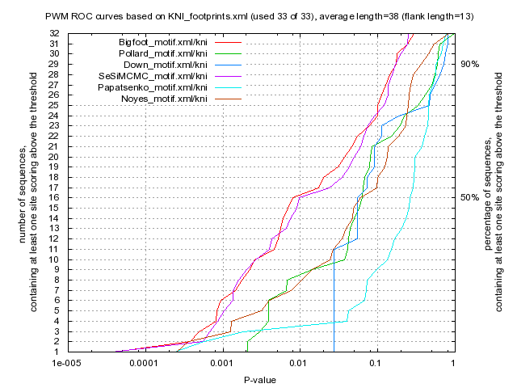

Kulakovskiy I.V., Favorov A.F., Makeev V.J. (2009) Motif discovery and motif finding from genome-mapped DNase footprint data. Bioinformatics 25(18): 2318-2325.
<up> DMMPMM motif KNI comparison [dmmpmm_compare_html]
|  |
motif alignment
motif similarity
|
Bigfoot |
Pollard |
Down |
SeSiMCMC |
Papatsenko |
Noyes |
| Bigfoot |
1.0 |
0.2 |
0.052 |
0.7721 |
0.0588 |
0.2434 |
| Pollard |
0.2 |
1.0 |
0.0227 |
0.1732 |
0.0398 |
0.1469 |
| Down |
0.052 |
0.0227 |
1.0 |
0.0487 |
0.1199 |
0.0325 |
| SeSiMCMC |
0.7721 |
0.1732 |
0.0487 |
1.0 |
0.0517 |
0.2341 |
| Papatsenko |
0.0588 |
0.0398 |
0.1199 |
0.0517 |
1.0 |
0.0392 |
| Noyes |
0.2434 |
0.1469 |
0.0325 |
0.2341 |
0.0392 |
1.0 |
|